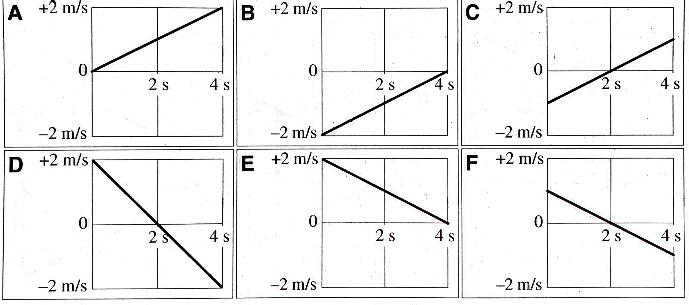
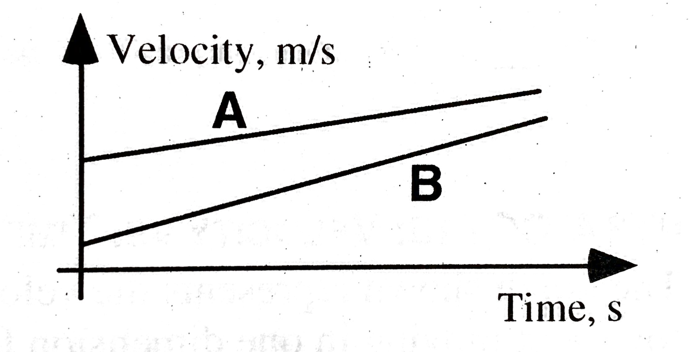
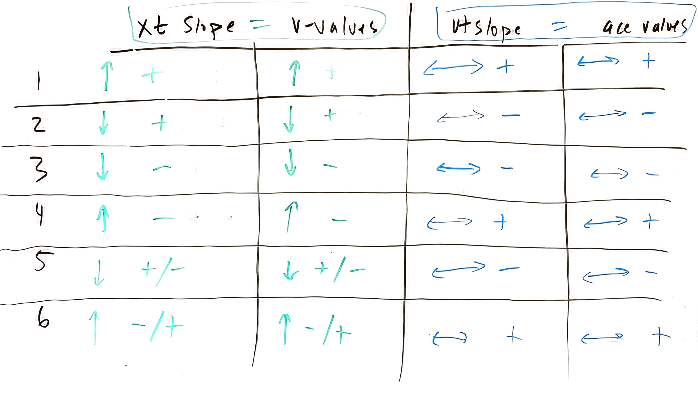

layout: true <div class="my-header"><img src="images/scsdLogo.png" style="height: 70px;"/></div> --- class: center, middle, inverse # AP Physics Daily Plans 2020-2021 --- class: thanksgiving ##2020.11.09 AP Physics .qotd[❓ of the 📆: You can have an unlimited supply of one thing for the rest of your life, what is it? Sushi? Scotch Tape? Me: 🌯] 1. ⌚ Do Now - 2.3 Projectile Motion Ranking Task (p. 57 in Porter Workbook) 2. 🥼 Horizontal Projectile Lab HW: 1. ✔️ Start AP Progress Check Questions (AP Classroom) (Due 11/16) 2. ✔️ 2.2 Horizontally Fired Projectiles 3. ✔️ Study for Quiz on Thursday - Buffet Quiz: Choose the standards that you want to reassess - Everyone will do another KIN 2 - Solving Word Problems --- #Lab - Horizontal Projectile Develop a procedure to determine the horizontal "launch velocity" of your ramp to predict where the ball will land when launched off of the laptop cart. --- class: thanksgiving ##2020.11.05 AP Physics .qotd[❓ of the 📆: What is the best board game 🎲♟️?] 1. Do Now: - Finish Reaction time calculations - The speed limit on MH Road is 40 mph (~18 m/s). Determine how much further you travel reacting while texting vs. reacting while driving attentatively. - How big of a distance is this? Relate this to another object or situation that is of similar size. 2. Demo Prediction and Pivot Results - Pull up "Freefall Five" and "Three Views of a Projectile" 3. In Person Lab - Predicting Horizontal Projectiles **HW:** - Vectors video - Start AP Classroom Unit 1 Progress Check MC and FRQs (Due 11/16) --- class: thanksgiving ##On a whiteboard: - What patterns do you notice about the two labs? Compare to a neighbor -- - Develop an explanation for these patterns? How and why are these two labs similar? -- - With that knowledge lets predict a new situation: -- - Launcher: Which ball will hit first? What are the possibilities and the ramifications for each possibility (i.e. what physics does that tell us? Does it support our earlier patterns or conflict with our earlier patterns?) -- - Rolling Cart: What will happen when I launch the ball vertically in the moving cart? --- class: thanksgiving ##2020.11.02 AP Physics .qotd[❓ of the 📆: What’s your favorite sandwich 🥪 and why?] 1. Quiz 2. Mini-Lab: - Using just a ruler/meterstick, determine you reaction time. - Solve on your whiteboard - Measure your reaction time while attentive and while texting 3. AP Workbook 1.J, 1.K, 1.L **HW:** - Finish AP Workbook 1.J, 1.K, 1.L - Pivot: Three Views of a Projectile --- class: halloween ##2020.10.28 AP Physics .qotd[❓ of the 📆: True or False? The only way to eat a kit kat is to break it part and eat one section at a time.] 1. ⛰️ Lab Challenge 2. 🍂 Free fall Five Results 3. 🎳 Finish Rolling Ball Ranking Question **HW** - Quiz - Solving Kinematic Word Problems (Kin 2.) - AP Classroom Videos - 2.1 Porter Packet - Freefall problems --- class: halloween ## How far apart do the photogates need to be to for them to measure a time of 0.12 seconds? .center[<img src="images/ramppractical.png" width = "800 px"/>] ####Derive an equation for `\(\Delta x_2\)` in terms of `\(a\)`, `\(\Delta x_1\)`, and `\(t\)` --- class: halloween ##📝 Notes: ####Write yourself some notes describing the problem-solving process for this --- class: halloween ##🔌 Extensions ####In your notebook answer the following questions -- - You (hypothetically) repeat this experiment on a a steeper ramp. Will your `\(\Delta x_2\)` increase, decrease, or remain the same to keep the same `\(\Delta t \)`? Justify your answer by citing our derived equation. -- - A peer in you class claims that shortening the distance between the two photogates by moving photogate 1 down the ramp towards photogate 2 (while keeping photogate two stationary) will decrease the time that it takes to move through the photogates. Justify this with **two** reasons from our derivation. --- class: schodack ##2020.10.26 AP Physics: .qotd[❓ of the 📆: What was your favorite halloween costume?] 1. 🤔 Quiz 2. 🧻 1.11.2 Ranking Task: Constant Velocity vs. Constant Acceleration **HW:** 🔲 Watch Video (Posted by Noon Tomorrow) & Complete Porter Workbook 1.10 Problem Solving with Equations 🔲 Free-fall Five Pivot --- class: schodack ##2020.10.26 AP Phsyics: .qotd[❓ of the 📆: Hanging out by a camp fire, bonfire, or fireplace?] .agenda[ 1. Derive equations 2. Work with equations 3. Problem solve HW: Freefall Five Lab ] .goals[ 🎯 Kin 2. I can make predictions about the of a system based on the fact that acceleration is equal to the change in velocity per unit time, and velocity is equal to the change in position per unit time. 🎯 Kin 3. I can create mathematical models and analyze graphical relationships for acceleration, velocity, and position of the center of mass of a system and use them to calculate properties of motion of the center of mass of a system. ] --- class:schodack ##2020.10.22 AP Physics .qotd[❓ of the 📆: Hanging out by a camp fire, bonfire, or fireplace?] 1. 🤔 Quiz Comments 2. 💡 Working through 1.9: - Quick Porter Review of the Problem-solving process - Assign Problems - Work through problems & check with your buddy/buddies - Check with Mr. P or Mr. D - Rehearse soluion with Partner(s) - Post solution video to Flipgrid - Work through the rest of the problems --- class:schodack ##2020.10.19 AP Physics .qotd[❓ of the 📆: If you had to delete all but 3 apps from your smartphone, which ones would you keep?] 1. 🤔 Quiz 2. 💡 Working through 1.9 - Porter Summary - Working as a trio in Jamboard 3. ⏲️ [If Time Allows] Go Over Workbook 1.C --- class:schodack ##2020.10.19 AP Physics .qotd[❓ of the 📆: If you had to delete all but 3 apps from your smartphone, which ones would you keep?] 1. 🤔 Quiz 2. 🙈 Blind Dates w/ Porter workbook 1.9 - Solve the problem on your side of the board - You can discuss the solution with your blind date, but you cannot look at their solution - Spin board an compare answers - Rotate (on Porter's command) to a new partner 3. ⏲️ [If Time Allows] Go Over Workbook 1.C **HW**: ☑️ Video + Porter workbook 1.10 Problem-Solving with Equations --- class:schodack ##2020.10.15 AP Physics - Do Now: Graphs of a velocity versus time during 4 seconds for six identical objects are shown below. THe objects move along a straight, horizontal surface. .center[] 1. Rank these situations on the basis of displacement of the objects during these intervals. 2. Rank these situations on the basis of average velocity of the objects during each of these intervals. 3. Look over the feedback from me on 1.6-1.8 --- class:schodack ##2020.10.15 AP Physics .qotd[❓ of the 📆:Vacation on the beach 🏖️ or adventure in the mountains ⛰️?] 1. Do Now 2. AP Workbook 1.C - Go Over 3. [⏰ 15 min] Motion Card Sort - Upload a photo of your sort to Jamboard and annotate your sorting method 4. Whiteboard + Go Over Porter Workbook 1.7 Stacks of Graphs 5. Whiteboard + Go Over Porter Workbook 1.8 VT Graphs HW: - AP Workbook 1.I The Chase, Porter workbook 1.9 #2 & 3 - Quiz on: - KIN 1. I can express the motion of an object or system using narrative, mathematical, and graphical representations. - KIN 3. I can create mathematical models and analyze graphical relationships for acceleration, velocity, and position of the center of mass of a system and use them to calculate properties of motion of the center of mass of a system. --- class:schodack #2020.10.05 AP Physics - Do Now A student is shown the velocity-time graphs for two objects and is asked to decide which object is moving faster. The student responds: .center[] *"B is faster because it has a steeper slope."* **What, if anything, is wrong with the student's statement? If something is wrong, explain the error an how to correct it. If the statment is correct, explain why.** ------------------------------------------ .qotd[❓📆: Do you have any weird/unique routines or superstitions? (For example: I have to put on my left sock before my right sock, and the same for shoes, left on first.)] --- class:schodack #2020.10.05 AP Physics .qotd[❓📆: Do you have any weird/unique routines or superstitions? (For example: I have to put on my left sock before my right sock, and the same for shoes, left on first.)] 1. Do Now ✔️ 2. Finish Carts + Ramps Discussion 3. Dry Ice Puck Summary 4. Notes 5. 1.8 Velocity vs. Time Graphs Note: scanned quizzes will be returned via email today. HW: 1.7 + 1.8 --- ###Carts + Ramps .center[] --- class: schodack ##Dry Ice Puck - Determining Acceleration Experimentally 1. Whiteboard your results -- sketch each of the 3 graphs you made - Position vs. Time - Linearized Position graph - Velocity vs. Time Graph 2. Provide the mathematical model that goes with each graph (equation) 3. Be prepared (i.e. discuss with someone near you) to discuss: - Meaning of slope for linear graphs - Meaning of intercept for linear graphs --- class: center, middle #[Notes](https://mrporterphysics.github.io/Presentations/APCAPM/talks/APCAPM2020.html#1) --- class:schodack #2020.10.01 AP Physics **Do Now** ✔️ Finish checking Carts + Ramps with card sort graphs ✔️ Fill out the chart at the end of the situations (page 23) ✔️ Put your assigned problem on a vertical whiteboard with your partner (predicted vs. actual graphs and answers to the chart) .qotd[QotD: Celebrity Crush?] --- class:schodack #2020.10.01 1. Do Now (finish lab) 2. Board Meeting - Carts + Ramps 3. Board Meeting - Dry Ice Pivot 4. Motion Definitions + Notes --- class: schodack # Carts + Ramps 1. Describe the position vs. time graph slope and how it compares to the velocity values 2. Describe your velocity vs. time graph's slope and how it compares to the position vs. time graph 3. For the groups that collected the "acceleration" data...how does the acceleration compare to the other two graphs? How are the related? --- #HW: - Workbook (submit photos on classroom) - 1.C Average vs. Instantaneous Velocity - 1.G Graphs of Velocity - 1.H Relationships between Position, Velocity, and Acceleration --- class: schodack #2020.09.28 AP Physics .qotd[QotD: What is your most used emoji? 🤷♂️ 🤦♂️] 1. Quiz 2. Finish Carts + Ramps (check your card sort with the cart and ramp) - Organize Cards based on verbal description - Compare and contrast to with your partner. Make sure you discuss **each** situation until you agree and then copy the two graphs into your packet - Draw the motion map for each situation (skip the part where it has the weird word "acceleration vector") - Ignore the 3rd graph (for now...) - Use your cart and Graphical Analysis to set up each situation and compare your prediction - Fill in the table 2. Carts + Ramps Discussion HW: Pivot - Dry Ice Puck --- class:schodack #2020.09.24 AP Physics: .qotd[QotD: What weird quirks did you pick up from your parents?] 1. Do Now: Finish Walk the Graph Lab 2. Whiteboard you assigned walk the graph question to explain to the clas 3. Carts and Ramps (1.5) - Organize Cards based on verbal description - Compare and contrast to with your partner. Make sure you discuss **each** situation until you agree and then copy the two graphs into your packet - Draw the motion map for each situation (skip the part where it has the weird word "acceleration vector") - Ignore the 3rd graph (for now...) - Use your cart and Graphical Analysis to set up each situation and compare your prediction - Fill in the table --- class:schodack #2020.09.25 AP Physics: **Homework**: - Pivot: Rolling Ball Challenge 3 (Pick the trial that corresponds to the month you were born in) - Quiz on Monday: Multiple Representations: - *Kin 1. I can express the motion of an object or system using narrative, mathematical, and graphical representations. * - I will post solution videos (tomorrow 3rd block) on the previous Porter + AP Workbook materials - I will also post a practice quiz that is *optional* for you to complete --- #2020.09.21 AP Physics - Do Now: *In your notebook...* write down an real-life example of motion where - an objects position, distance, and displacement after a period of time are all ***the same*** - an objects position, distance, and displacement after a period of time are all ***different*** On Google Classroom (in the stream) use the link to install Graphical Analysis on your Chromebooks --- class:schodack #2020.09.21 AP Physics .qotd[QotD: What did you most recently purchase?] 1. Do Now 2. Go Over Pivot HW 3. CER 4. Walk the graph lab HW: - Porter Workbook 1.3, 1.4 (There will be a video posted that accompanies 1.4 and workbook 1.F) - AP Workbook 1.D, 1.F --- class:schodack #Lab: 1. Sketch you `\(x\)` vs. `\(t\)` graph from your lab on your whiteboard 2. Write the equation for the you specific model. Be sure to include units on any constants (slope and intercept) 3. Write your claim to Ava's hypothesis --- class:schodack #Ball Rolling Left - Ava's Hypothesis: <br> **Scientific Argument with Claim-Evidence-Reasoning format in physics**: **Claim:** Answer to the question -- **Evidence:** Features of the graph or measurements that support your claim -- **Reasoning:** Explain how the evidence supports your claim --- class:schodack HW: - Porter Workbook 1.3, 1.4 (There will be a video posted that accompanies 1.4 and workbook 1.F) - AP Workbook 1.D, 1.F --- ##2020.09.17 AP Physics - Do Now: <div style='position: relative; padding-bottom: 56.25%; padding-top: 35px; height: 0; overflow: hidden;'><iframe sandbox='allow-scripts allow-same-origin allow-presentation' allowfullscreen='false' allowtransparency='true' frameborder='0' height='315' src='https://www.mentimeter.com/embed/d556f326fb6db2992eef02715b0d0d23/3e136c3664ed' style='position: absolute; top: 0; left: 0; width: 100%; height: 100%;' width='420'></iframe></div> --- class:schodack #2020.09.17 AP Physics .qotd[QotD: What place to visit is at the top of your bucket list?] 1. Do Now 2. Ball Rolling Right Pivot 3. Ball Rolling Left Pivot --- class: schodack #Ball Rolling Right 1. Open Assignment 2. Read through your answers to Part 3 + 4 3. Be prepared to discuss and ask questions! --- class: schodack #Ball Rolling Right - What do you notice is similar about all of the graphs? - What do you notice is different about the graphs? - What conclusions can we make about the motion of the bowling ball from our graphical models of motion? --- class:schodack #Ball Rolling Right - What does it all mean? -- - What does the slope represent? - For every statement: "The < **quantity on vertical axis** > goes up < **slope value with vertical units** > for every 1 < **horizontal unit** > of < **quantity on horizontal axis** >." -- - What does the intercept mean? --- class:schodack, center, middle #The Models... --- class:schodack #The Models... Math: $$y = mx + b$$ -- Specific Model: $$position = (75\textrm{ cm/s})time + 23 \textrm{ cm}$$ -- Generic Model: $$x = \bar{v}t + x_0$$ -- Average Velocity: $$\bar{v} = \frac{\Delta x}{\Delta t}$$ --- class:schodack, center, middle #What can we do with a model? --- class:schodack, center, middle #Make Predictions! --- #Predicting with Models - Why isn't your predicted time exactly the same as the actual time? If you think you might have made measurement mistakes, what specifically were they, and how would those mistakes affect the model? -- - Does having a non-zero percent different mean the model was wrong? Is the model still useful, even if its predictions are off a little bit? Explain. -- - Why might you need a better model of the ball than what you came up with? Think of a "real world" example where it would be important to have a more accurate model of a moving object. (When does this model for motion become limited?) --- class:schodack #Ball Rolling Left Like in Level 1, you will be plotting position vs. time for the bowling ball and generating an equation for the motion. How will the graph and equation be similar to those you found in Level 1? How will they be different? What do you see in the video that makes you think that? Explain. --- class:schodack #Ball Rolling Left Notes: - Use same video trial as last time - It was too quiet in here last time...talk to your neighbors when you have questions! --- class:schodack #Ball Rolling Left - How do the slope and intercept vary here? --- class:schodack #Velocity - is a ***vector*** quantity -- means it has two properties: size and direction - Size: how great or little the rate of position changing with time - Direction: the direction that the object is moving --- class:schodack #Ball Rolling Left - Ava's Hypothesis: <br> ##Scientific Argument with Claim-Evidence-Reasoning format in physics: **Claim:** Answer to the question -- **Evidence:** Features of the graph or measurements that support your claim -- **Reasoning:** Explain how the evidence supports your claim --- #Homework: ☑️ AP Workbook 1.A, 1.B (Submit Photos of work on classroom for feedback) ☑️ AP Daily Video - Reference Frames (Watch and take notes) ☑️ [Multiple Representation Tutorial](https://www.notion.so/Multiple-Representation-Tutorial-b64d50d01c474ca8905381e8b20a16dc) (Read, take notes, complete attached practice) **I will link all of this to a classroom assignment with directions too! --- class:schodack #Welcome! .qotd[Question of the Day: Sweet or savory for breakfast?] 1. Fill out questionnaire 1. Question of the Day 2. Polar Bears 🐻❄️ around an ice hole 🧊🕳️ 2. Survival Island Share Out 2. About AP Physics Class 3. Tech Tools: - Pivot Interactives - Slack 4. What can you measure about Zeke? --- #Quick Questionnaire Go to: https://forms.gle/zjAjMq8iPbjqw7MQA or... .center[] --- class:center, middle #Question of the Day: Sweet or savory for breakfast?] --- class:photoback background-image: url("https://media.giphy.com/media/Jrpy4EB3uqVx8RpRKK/giphy.gif") The game is in the name of the game - polar bears around an ice hole - invented in the days of Ghengis Khan. A clue for you to keep you true -- like petals around a rose, you can count each bear's nose. How many polar bears do you see? [Dice Roller](https://www.random.org/dice/) --- class: schodack, center, middle #Why? What connections to physics class? --- class:schodack #Why? - You may feel frustrated as you try to figure physics out. That’s okay. -- - Physics is hard to understand until you know the “rules of the game.” -- - But, once you discover the rules, physics often seems easy and you may be surprised that others don’t understand. -- - However, remember that you didn’t always understand. -- - When you discover the rules and understand without someone just telling you the “answer”, you are excited. -- - The journey to understanding is very important. So, no one is going to tell you the answer, but we’re all here to support each other on our journeys. -- - Being told the “answer” at most gives you one answer that you didn’t know. Learning to think critically and arrive at the answer with support develops a skill that you will use to find many answers. --- class:schodack #Inquiry - make careful observations -- - gather lots of data (many roles of the dice) -- - look for patterns, compare and contrast, look for extremes -- - simply the problem being investigated (roll fewer dice) -- - constrain the variables (set dice to specific values) -- - propose a hypothesis, test it, modify it based on results, repeat --- #Survival Island 🏝️ You and your group are stranded on an deserted island 😮! -- Using *each* of your <u>unique skill's</u> develop a plan to escape the island. -- Whiteboard your response (one person) - please wash your hands, or use hand sanitizer before and after using the markers - also remain at your tables physically distant from your group members. -- Be prepared to share out your plan to escape the island as a group. Each of you should offer a part of the plan to the class. --- class:schodack #2020.09.14 AP Physics .qotd[QotD: What is one weird/interesting fact about yourself?] 1. Do Now: In your notebook (or a scrap piece of paper if you don't have one) answer the following prompts: - *What is a scientific model?* - *How do you make a scientific model?* - *How do you describe and quantify motion?* 2. How to learn 3. Zeke 4. Tech Tools 5. Rolling Ball Lab HW: - Read Syllabus - Ball Rolling Left Pivot Assignment - Wednesday Check in (will remind you on classroom) - AP Daily Video --- class: schodack #Your Questions: - Will I fall behind? Will you help me if I fall behind? How will you help me? - How was your wedding? - Pop Quizzes? - Anyone is capable of doing this class, people will learn at different paces - No Quantum in AP Physics :( - What is physics? - Most important topic this year? - How will labs work? --- class: schodack #Learning happens in two phases: information transfer and sense-making .left-column[ ##Information Transfer .center[]] .right-column[ ##Sense-Making .center[<img src="icons/thinking-svgrepo-com.svg" width = "200 px"/>]] ??? Note back to the polar bears around an ice hole: - I was providing information (how many polar bears) - You were doing the sense-making (but I helped when I took dice away or offered hints) --- class: schodack #Who/what is helping with information transfer? - [AP Daily Videos]("https://apclassroom.collegeboard.org/92/home") - [Flipping Physics]("https://www.flippingphysics.com/ap-physics-1.html") - [Khan Academy Videos]("https://www.khanacademy.org/science/ap-physics-1") - [OpenStax College Physics]("https://openstax.org/books/college-physics-ap-courses/pages/1-connection-for-ap-r-courses") - Mr. Porter - and more... **All resources will be vetted, selected, and curanted by Mr. Porter** --- #Who is helping with sense-making? .left-column[.center[<img src="icons/thinking-svgrepo-com.svg" width = "100 px"/>] ##What does that look like? - Coach and cheerleader - Design and implement sense-making tasks and activities - Offer feedback and encouragement - Answer questions - Clarify information received - Give and grade assessments to provide *more* feedback] .right-column[.center[<img src="images/HeatherNate_0230.jpg" width = "250 px"/>] Mr. Porter with his AP Physics class] --- class:schodack #What is your role? <br> .left-column[.center[] - Read and take notes over assigned readings - Watch and take notes over assigned videos - Interrogate what you’re reading or watching: “Why is this true?” - Understand that just because you’ve been exposed to the information that doesn’t mean you’ve learned it yet ] .right-column[.center[<img src="icons/thinking-svgrepo-com.svg" width = "100 px"/>] - Participate in class activities and relate them to the information from information transfer tasks - Ask lots of questions - Seek out feedback from peers and teacher - Ask lots of questions - Engage with homework meaningfully (don’t just Google for answers) - Ask lots of questions - Become comfortable with mistakes and being wrong at first ] --- class: schodack #Tech Tools: <img src="https://upload.wikimedia.org/wikipedia/commons/5/59/Google_Classroom_Logo.png" width = "150px"/> <img src="https://d34u8crftukxnk.cloudfront.net/slackpress/prod/sites/6/2019-01_BrandRefresh_slack-brand-refresh_header-1.png" width = "150px"/> <img src="https://static1.squarespace.com/static/5b563343c258b4713971bd98/t/5b5634242b6a28e23446c5a1/1597687166766/" height = "150px"/> --- #Google Classroom #Code: hfujik3 Note: you should already have an invite to the Google Classroom --- #Slack https://join.slack.com/t/mhapphysics/shared_invite/zt-h9cidfar-_hLwQFGtSt6Ox8yujIHkYA Or...join from the link on Google Classroom...that seems easier... --- #AP Classroom #https://myap.collegeboard.org/ #CODE: AYZEGW --- #Pivot Interactives https://www.pivotinteractives.com/ 1. Click Join a class 2. Use the class key: d8ff7b1d (or join from Google Classroom) 3. Open First Assignment (ball rolling left) --- class:photoback background-image: url("images/Zeke") #I changed my mind on the lab we were going to do...but here is my dog Zeke anyways. --- class:center, middle, schodack #What do you see, think, and wonder? --- class:center, middle, schodack #How can we predict the time that the ball would be at the flag? --- class:center, middle, schodack #Pivot Tools + Practice Measurements --- class:center, middle, schodack #Video Assignments --- class:center, middle, schodack #What data should we collect and how should we do it? --- class:center, middle, schodack #Board Meeting --- class:center, middle, schodack #Predictions --- class:schodack #Exit Ticket On google classroom answer: What did we model today? How did we model it? What is the model for? --- class: schodack #Homework/Wednesday Class 1. Pivot Assignment: Ball Rolling Left 1. Read Syllabus 1. Wednesday Check in: - Answer the posted question of the day in slack by 8 am on Wednesday (I will post the question Tuesday evening) - Note office hours are available if you have questions on Pivot (link on classroom for sign up) 2. AP Daily Video on Motion